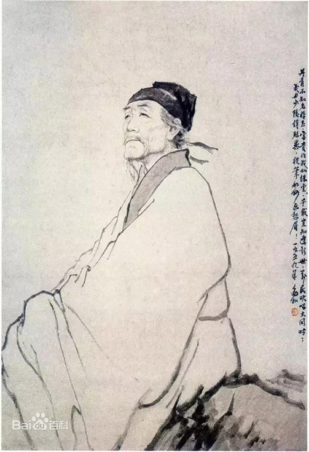
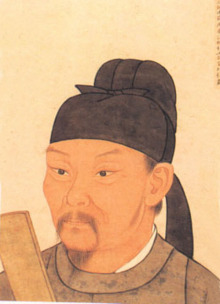

杜甫（712年2月12日 [1] ～770年），字子美，自号少陵野老，唐代著名现实主义诗人，与李白合称“李杜”。出生于河南巩县，原籍湖北襄阳。
为了与另两位诗人李商隐与杜牧即“小李杜”区别，杜甫与李白又合称“大李杜”，杜甫也常被称为“老杜”。
杜甫少年时代曾先后游历吴越和齐赵，其间曾赴洛阳应举不第。三十五岁以后，先在 长安 应试，落第；后来向皇帝献赋，向贵人投赠。官场不得志，亲眼目睹了唐朝上层社会的奢靡与社会危机。 天宝十四载（755年），安史之乱爆发，潼关失守，杜甫先后辗转多地。乾元二年（759年）杜甫弃官入川，虽然躲避了战乱， 生活相对安定，但仍然心系苍生，胸怀国事。杜甫创作了 《登高》 《春望》《北征》以及“ 三吏 ”、“三别”等名作。虽然杜甫是个现实主义诗人，但他也有狂放不羁的一面，从其名作《饮中八仙歌》不难看出杜甫的豪气干云。
杜甫的思想核心是仁政思想，他有“致君尧舜上，再使风俗淳”的宏伟抱负。 杜甫虽然在世时名声并不显赫，但后来声名远播，对中国文学和日本文学都产生了深远的影响。 杜甫共有约1500首 诗歌被保留了下来，大多集于《杜工部集》。
大历五年（770年）冬，病逝，享年五十九岁。杜甫在中国古典诗歌中的影响非常深远，被后人称为“诗圣”，他的诗被称为“诗史”。 后世称其杜拾遗、杜工部，也称他杜少陵、杜草堂。
